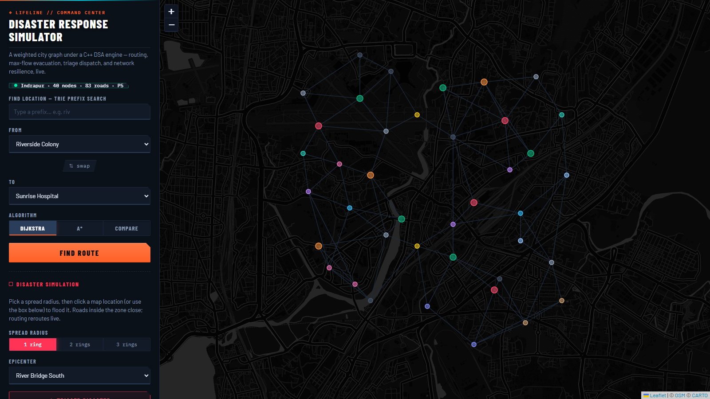
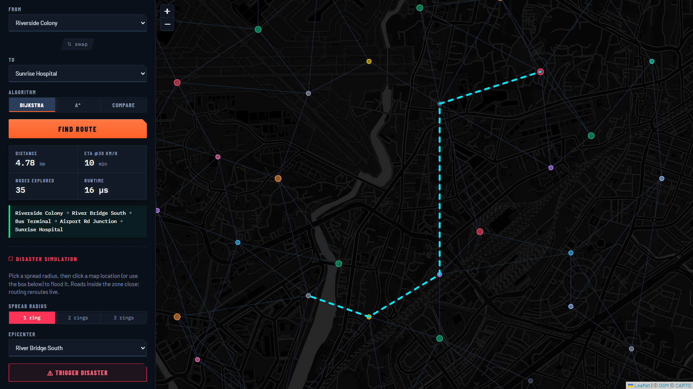
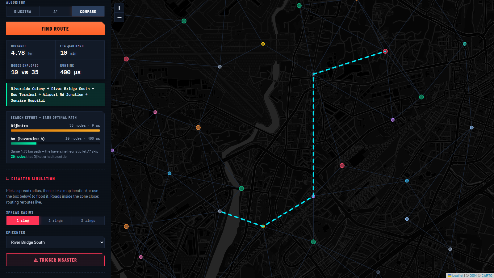
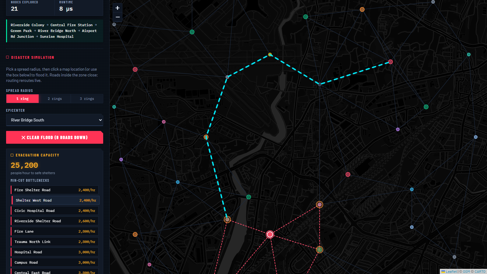
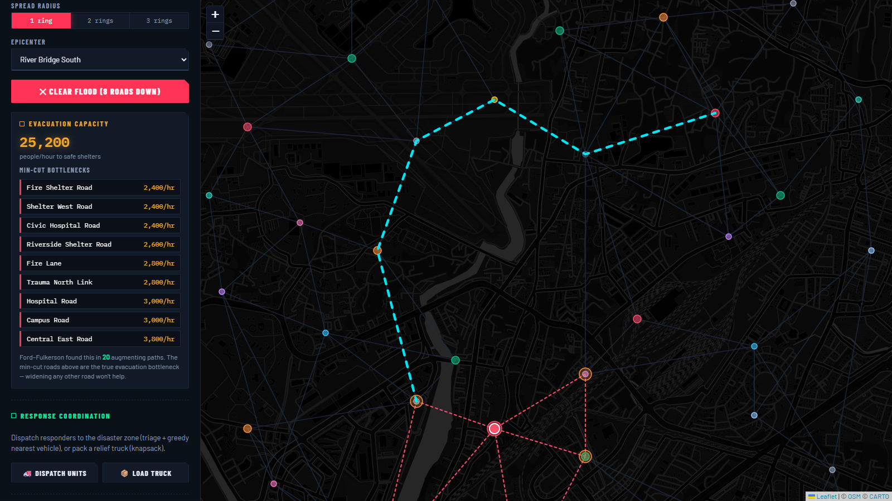
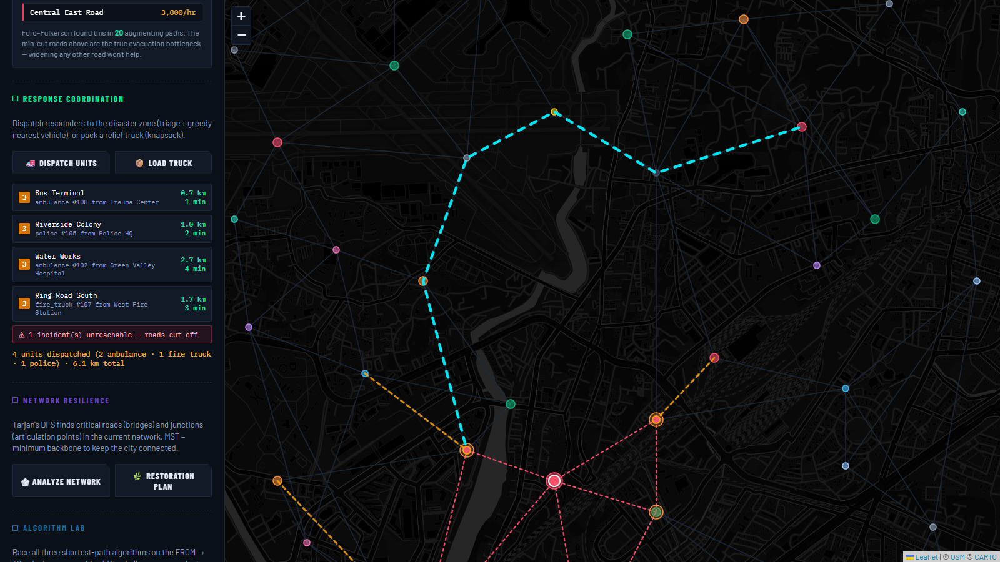
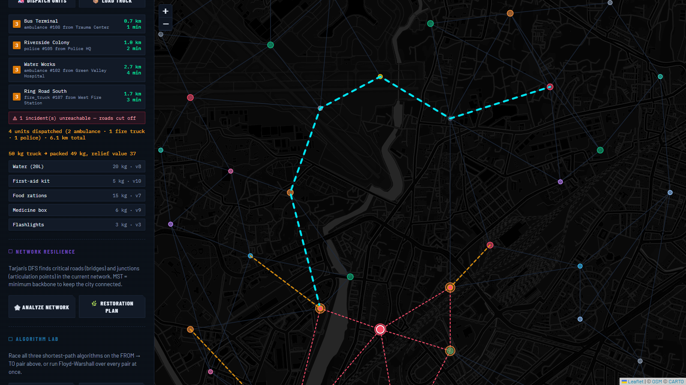
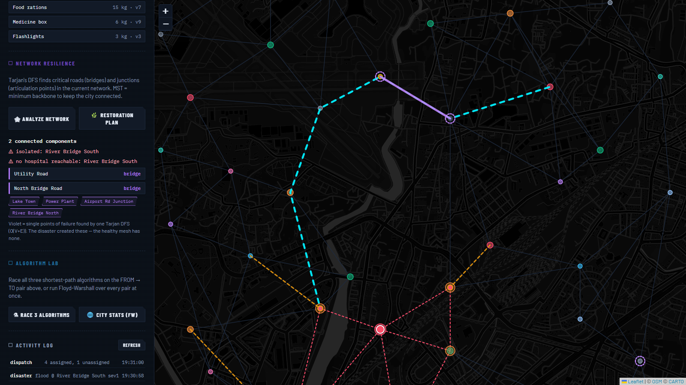
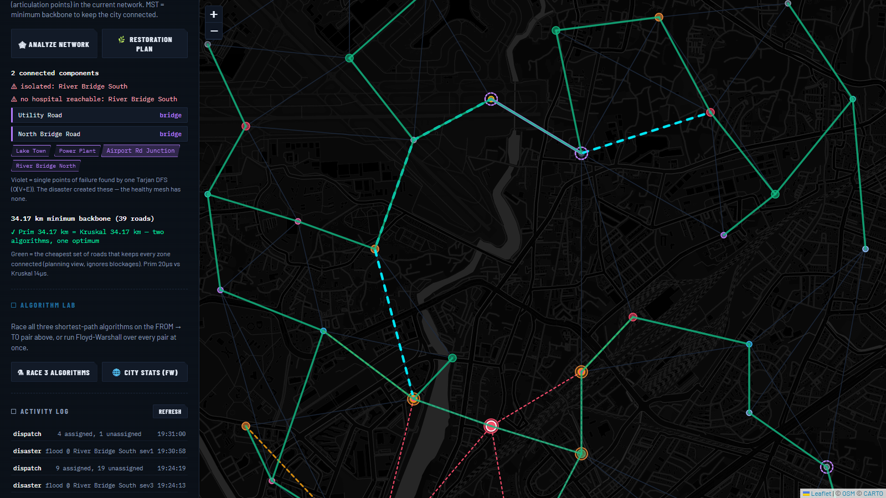

Lovely Professional University
Department of Computer Science & Engineering
PROJECT REPORT
Disaster Response Simulator
A graph-algorithm engine for emergency routing, evacuation capacity, vehicle dispatch, and network resilience — C++17 core, REST API, React map interface.
PETV140 — DSA PLACEMENT BOOTCAMP: MASTER DATA STRUCTURES AND ALGORITHMS FOR INDUSTRY
| Ishaan Sandhwar | 96 |
| Harsh Sharma | 76 |
| Deepak Kumar Behera | 77 |
| Piyush Priyanshu | 79 |
| Aditya Shukla | 47 |
Submitted to: 32137-Mahipal Singh Papola, 33575-Deepak Kumar
July 2026
Live demo: lifeline-31iq.onrender.com · Source: github.com/TheGodVishnu21/lifeline
Emergency response in a city is fundamentally a graph problem: roads are weighted edges, junctions and facilities are vertices, and every operational question — the fastest ambulance route, the evacuation capacity of a flooded district, the single road whose loss would split the city — corresponds to a classical algorithm on that graph. LifeLine is a full-stack disaster-response simulator built on this observation. A fictional city, Indrapur (40 locations, 83 roads), is modelled as a weighted undirected graph with per-road capacities. A C++17 engine implements shortest-path routing (Dijkstra, A*, Bellman-Ford, Floyd-Warshall), disaster spread simulation (breadth-first search), evacuation-capacity analysis (Edmonds-Karp maximum flow with minimum-cut extraction), emergency vehicle dispatch (max-heap triage with greedy assignment), relief-supply optimisation (0/1 knapsack dynamic programming), and network-resilience analysis (Tarjan’s bridge/articulation-point algorithm, Union-Find, and Prim’s and Kruskal’s minimum spanning tree algorithms). All supporting data structures — binary min-heap, binary max-heap, hash map, trie, union-find, and queue — are implemented from first principles; no STL container that would trivialise the coursework is used in algorithmic code. The engine is exposed through a REST API and operated from a React-based map interface. Correctness is established by 96 automated checks across five test suites, cross-algorithm agreement on all 1600 vertex pairs, and independent verification against tools/verify_city.py, an independent pure-Python implementation of the same algorithms.
Keywords: graph algorithms, shortest path, maximum flow, minimum spanning tree, heap, trie, dynamic programming, disaster management
Natural disasters stress a city’s road network in ways that are difficult to reason about manually. When a flood closes a bridge, the shortest ambulance route changes; the number of people who can reach shelters per hour drops; junctions that were previously redundant become single points of failure. City control rooms answer these questions under time pressure, and each question is, at its core, an instance of a well-studied graph problem:
LifeLine packages these problems into one coherent, interactive product. Rather than presenting each course algorithm as an isolated exercise, the project embeds every algorithm in a live system where its output is visible on a map and its correctness is checked by automated tests. The result demonstrates not only that the algorithms were implemented, but that they were understood well enough to be composed into a working application: the disaster module’s BFS output feeds the triage heap; blocked edges from the simulation are respected transparently by every routing algorithm; the min cut computed by the evacuation module explains exactly why some dispatch incidents are reported unreachable.
Given a city road network represented as a weighted undirected graph with per-road capacities, build a system that can:
tools/verify_city.py).The system is a two-tier application. A single C++17 executable contains the algorithm engine, an embedded HTTP server (the header-only cpp-httplib library), and a static file server for the frontend. The React (Vite) frontend communicates with the engine exclusively through JSON over HTTP; the API contract is documented in docs/api_spec.md.
React (Vite build) ──HTTP/JSON──▶ cpp-httplib REST layer (one mutex)
│
┌────────────────────┼─────────────────────┐
routing/ evacuation/ dispatch/
Dijkstra·A*·BF·FW Edmonds-Karp + cut triage·greedy·knapsack
└───────── core/graph.h ◀── data/city_graph.json
▲
resilience/ (Tarjan·UF·MST) ds/ (heaps·hashmap·trie)
│
db/history (SQLite | JSONL)Design decisions worth noting:
core/graph.h, which was frozen at the start of the project. The graph is stored as an adjacency list; each Edge carries to, length_km, capacity, a blocked flag, and the road’s display name. Freezing the interface allowed the five team members to develop their modules in parallel without merge conflicts on the core.blocked; every consumer (Dijkstra, A*, Bellman-Ford, Floyd-Warshall, max flow, MST, Tarjan) skips blocked edges at the point where it enumerates neighbours. No algorithm needs to know why a road is closed — the flag is the entire protocol, which is what makes disaster → reroute automatic.USE_SQLITE=1, and a zero-dependency JSONL append-only file otherwise, behind an identical interface. The default build therefore has zero external dependencies.The city graph (40 vertices, 83 edges) is generated by tools/generate_city.py. Rather than hand-drawing a map and hoping it has good algorithmic properties, the generator enforces two properties by construction:
Vertices carry a type (hospital, shelter, fire station, police station, residential, market, school, bridge, park, industrial), latitude/longitude coordinates, and a human-readable name; edges carry length (km) and capacity (persons/hour). Vertex types matter operationally: shelters are max-flow sinks, hospitals/fire stations/police stations host the vehicle fleet, and residential zones are where incidents concentrate.
All structures are hand-written; std::priority_queue, std::unordered_map, and std::sort are deliberately absent from algorithmic code. Section 2 gives each structure’s operations and pseudocode; the table below is the map from structure to role.
| Structure | File | Design notes |
|---|---|---|
| Binary min-heap | ds/min_heap.h |
Array-based; sift-up/sift-down; O(log n) push/pop. Dijkstra, A*, and Prim use lazy deletion in place of decrease-key. |
| Binary max-heap | ds/max_heap.h |
Priority supplied by a key-extractor; a monotonic sequence number breaks ties FIFO, giving stable triage for equal severities. |
| Hash map | ds/hash_map.h |
djb2 hash, separate chaining, table doubling at load factor 0.75; O(1) average operations. Used for fleet counting in dispatch. |
| Trie | ds/trie.h |
O(L) prefix walk plus subtree collection for location autocomplete. |
| Union-Find | resilience/union_find.h |
Path halving with union by rank; amortised inverse-Ackermann α(n). Used by Kruskal and for component counting. |
| Queue (BFS) | in max_flow.cpp, disaster.cpp |
Explicit array with a head index — no std::queue. |
Both heaps assert against pop()/peek() on an empty container, converting a silent undefined-behaviour bug into an immediate diagnostic during development.
| Endpoint | Purpose |
|---|---|
GET /api/health, GET /api/city |
status; full graph for the map |
GET /api/route?from&to&algo |
shortest path (Dijkstra or A*) |
POST /api/disaster, POST /api/reset |
trigger/clear a disaster |
GET /api/evacuation |
max flow and min-cut bottleneck roads |
POST /api/dispatch, POST /api/supply |
vehicle assignment; knapsack loading |
GET /api/resilience, GET /api/mst |
bridges/APs; restoration backbone |
GET /api/suggest?q |
trie-based autocomplete |
GET /api/compare, GET /api/citystats |
algorithm comparison; Floyd-Warshall analytics |
The project was developed in five phases by a five-member team, one module per member, against the frozen core/graph.h interface: Phase 1 routing, Phase 2 disaster simulation and evacuation, Phase 3 dispatch and supplies, Phase 4 resilience and search, Phase 5 API/frontend integration and testing.
The remainder of this report is organised as required: Section 2 (Algorithm) presents every data structure and algorithm with pseudocode, a worked example, and a complexity derivation; Section 3 (Results) presents the verification methodology and all measured outputs; Section 4 concludes and lists future scope; Section 5 lists references.
This section is the technical core of the report. For each data structure and algorithm we give: (i) the problem it solves inside LifeLine, (ii) pseudocode faithful to the actual C++ implementation, (iii) a small worked example where tracing adds insight, and (iv) a derivation — not merely a statement — of its time and space complexity. Throughout, V = 40 is the number of vertices and E = 83 the number of edges of the Indrapur graph; complexities are stated for general V, E.
ds/min_heap.h)Role. Priority queue for Dijkstra, A*, and Prim; also the sorting engine for Kruskal (heapsort).
Representation. A dynamic array where the element at index i has children at 2i+1 and 2i+2 and parent at ⌊(i−1)/2⌋. The heap invariant is a[parent(i)] ≤ a[i] for every non-root i, which guarantees the minimum sits at index 0.
PUSH(x):
append x at index n; i ← n; n ← n+1
while i > 0 and a[parent(i)] > a[i]: # sift-up
swap a[i], a[parent(i)]; i ← parent(i)
POP():
assert n > 0 # fail loudly, not silently
top ← a[0]; a[0] ← a[n-1]; n ← n-1
i ← 0
loop: # sift-down
s ← smallest of {i, left(i), right(i)} by value (children in range)
if s = i: break
swap a[i], a[s]; i ← s
return topComplexity derivation. The array is a complete binary tree, so its height is ⌊log₂ n⌋. Sift-up moves the new element at most one level per iteration toward the root: ≤ log₂ n swaps. Sift-down symmetrically moves the displaced element at most one level per iteration toward a leaf: ≤ log₂ n comparisons-and-swaps. Hence push and pop are O(log n); peek is O(1); space is O(n) with no per-node pointers (an advantage over pointer-based heaps in both memory and cache behaviour).
Lazy deletion instead of decrease-key. Textbook Dijkstra calls decrease-key when a shorter path to an already-queued vertex is found. A binary heap supports decrease-key only if every vertex’s heap index is tracked through every swap — a significant bookkeeping burden and a classic source of bugs. LifeLine instead pushes a duplicate entry with the improved distance and, on pop, skips any entry whose vertex is already settled:
(d, u) ← POP()
if settled[u]: continue # stale duplicate — ignoreEach edge relaxation pushes at most one entry, so the heap holds O(E) entries instead of O(V); pops cost O(log E) = O(log V²) = O(2 log V) = O(log V) — the asymptotics are unchanged, and the code is dramatically simpler. This trade-off (slightly more memory for much simpler, still-optimal code) is standard competitive-programming practice and is documented in the source.
ds/max_heap.h)Role. Triage queue for dispatch: the most severe incident must be treated first.
The max-heap mirrors the min-heap with the comparison reversed, plus two design points:
Complexity is identical to the min-heap: O(log n) push/pop, O(n) space.
ds/hash_map.h)Role. Counting the vehicle fleet by type in dispatch ("ambulance" → 3, "fire_truck" → 2, …) and general string→value lookup.
Design. Separate chaining: an array of B buckets, each a singly linked list of key–value nodes. The hash function is djb2 over the key string:
h ← 5381
for each character c in key: h ← h * 33 + c # (h << 5) + h + c
return h mod BInsertion appends to (or updates in) the bucket list; lookup walks one bucket. When the load factor n/B exceeds 0.75, the table doubles: a new array of 2B buckets is allocated and every node is re-hashed into it.
Complexity derivation. Under the standard simple-uniform-hashing assumption, each bucket holds n/B = α ≤ 0.75 expected nodes, so search/insert/erase inspect O(1 + α) = O(1) expected nodes. Rehashing costs O(n) but occurs only after n/2 insertions since the last doubling, so its amortised cost per insertion is O(1) (the standard doubling argument: charge each rehash to the insertions that filled the table). Worst case — all keys colliding — degrades to O(n), which is why the quality of djb2’s bit mixing matters in practice. Space is O(n + B) = O(n).
ds/trie.h)Role. Location-name autocomplete for the map’s search box (GET /api/suggest?q=riv → “Riverside Colony”, “River Bridge South”, …).
Design. Each node holds a fixed array of child pointers indexed by character, a flag isEnd, and the vertex id for complete names. A query walks the prefix character by character, then performs a DFS of the reached subtree to collect every completed name below it.
SUGGEST(prefix):
node ← root
for c in prefix:
if node.child[c] = null: return [] # no name has this prefix
node ← node.child[c]
return COLLECT(node) # DFS of subtree, gather isEnd nodesComplexity. The prefix walk is O(L) for a prefix of length L — independent of how many names are stored. Collection is O(size of the answer subtree). Space is O(Σ|name|) nodes overall.
Why a trie and not the hash map of §2.3? A hash map answers exact-key lookups in O(1), but a prefix query has no single key to hash — answering “all keys starting with riv” from a hash map requires scanning all n keys, O(n·L). The trie’s structure is the prefix index. This is the clearest example in the project of choosing a data structure by matching the query type, not by picking the asymptotically “fastest” structure for some other query.
resilience/union_find.h)Role. Cycle detection in Kruskal’s algorithm (§2.13) and connected-component counting before/after a disaster.
Design. Forest of parent pointers with two standard optimisations:
FIND(x):
while parent[x] ≠ x:
parent[x] ← parent[parent[x]] # path halving
x ← parent[x]
return x
UNION(a, b): # union by rank
ra ← FIND(a); rb ← FIND(b)
if ra = rb: return false # already connected — adding edge makes a cycle
attach lower-rank root under higher-rank root
(equal ranks: pick either, increment its rank)
return trueComplexity. Union by rank alone bounds tree height at O(log n). With path halving added, the amortised cost per operation is O(α(n)), where α is the inverse Ackermann function — at most 4 for any n that fits in the physical universe, i.e. effectively constant. (The tight bound is due to Tarjan; the project cites rather than re-proves it.) Space is O(n).
Worked example. Kruskal processes edges (A,B), (B,C), (A,C): UNION(A,B) succeeds, UNION(B,C) succeeds, then FIND(A) = FIND(C) — same root — so (A,C) is rejected as a cycle edge. Exactly this mechanism keeps the MST acyclic with 39 edges for 40 vertices.
simulation/disaster.cpp)Role. Model a disaster radiating outward from an epicenter, one road-hop per “ring”.
Algorithm. Level-order BFS from the epicenter using an explicit array-plus-head-index queue (no std::queue). Ring 0 is the epicenter; ring k is every vertex first reached in k hops. The simulation takes a radius r and: (i) records each affected vertex’s ring number, and (ii) marks every edge whose both endpoints lie inside the affected zone as blocked.
BFS-RINGS(epicenter, r):
ring[*] ← ∞; ring[epicenter] ← 0
queue ← [epicenter]; head ← 0
while head < |queue|:
u ← queue[head]; head ← head+1
if ring[u] = r: continue # do not expand past the radius
for each edge (u,v):
if ring[v] = ∞:
ring[v] ← ring[u] + 1
append v to queue
block every edge (u,v) with ring[u] ≤ r and ring[v] ≤ rWhy BFS and not DFS or Dijkstra? The physical model is “spreads one hop per time step”, i.e. distance measured in edge count, not kilometres. BFS is precisely the shortest-path algorithm for unweighted distance and visits vertices in non-decreasing ring order by construction (the queue holds at most two consecutive ring values at any time — the standard BFS level invariant). DFS explores depth-first and gives no ring structure; Dijkstra would weight the spread by road length, a different physical model.
Complexity. Every vertex enters the queue at most once and every adjacency list is scanned at most once: O(V + E) time, O(V) space.
Downstream contract. The ring number also becomes the incident severity for dispatch (§2.11): epicenter = 5, ring 1 = 3, ring 2 = 1. One BFS therefore feeds both the map overlay and the triage queue.
routing/dijkstra.cpp)Role. Single-source shortest paths for emergency routing; the workhorse of the project.
Algorithm. Maintain dist[v] (best known distance), parent[v] (for path reconstruction), and settled[v] (finalised vertices). Repeatedly pop the unsettled vertex of minimum tentative distance, settle it, and relax its outgoing edges. Blocked edges are skipped, which is the entire mechanism by which disasters reroute traffic.
DIJKSTRA(g, src, dst):
dist[*] ← ∞; parent[*] ← -1; settled[*] ← false
dist[src] ← 0; PUSH(pq, (0, src))
while pq not empty:
(d, u) ← POP(pq)
if settled[u]: continue # lazy deletion (§2.1)
settled[u] ← true
if u = dst: break # early exit: dst is final
for each edge e = (u, v, w) with not e.blocked:
if d + w < dist[v]: # relaxation
dist[v] ← d + w; parent[v] ← u
PUSH(pq, (dist[v], v))
if dist[dst] = ∞: return "unreachable"
return dist[dst], path by walking parent[] from dst to src, reversedCorrectness argument (sketch). Invariant: when a vertex u is settled, dist[u] is the true shortest distance δ(src,u). Proof by contradiction: suppose u is the first settled vertex with dist[u] > δ(src,u). A true shortest path to u must leave the settled set at some edge (x, y) with x settled, y not. Then dist[y] ≤ dist[x] + w(x,y) ≤ δ(src,u) (x was settled correctly, and the path from y onward has non-negative weight). But the heap popped u before y, so dist[u] ≤ dist[y] ≤ δ(src,u) — contradiction. The argument requires non-negative weights at the marked step; road lengths are positive, so the requirement holds by the problem domain.
Early-exit justification. The invariant says a settled vertex’s distance is final; therefore the moment dst is settled, its distance and parent chain cannot improve, and the search may stop. On the demonstration route this saves two-thirds of the work (§3.3).
Worked trace. Paper graph used in the unit tests — vertices A…E, edges A–B (4), A–C (1), C–B (2), B–D (5), C–D (8), D–E (3):
| Step | Popped | Settled set | dist[] after relaxations |
|---|---|---|---|
| 1 | (0, A) | {A} | B=4, C=1 |
| 2 | (1, C) | {A,C} | B=3 (via C), D=9 |
| 3 | (3, B) | {A,C,B} | D=8 (via B) |
| 4 | (4, B) | — | stale duplicate, skipped |
| 5 | (8, D) | {A,C,B,D} | E=11 |
| 6 | (9, D) | — | stale duplicate, skipped |
| 7 | (11, E) | {A,C,B,D,E} | done |
Shortest A→E path: A→C→B→D→E, distance 11. Step 4 and step 6 show lazy deletion in action: the duplicates pushed before B’s and D’s distances improved are popped and discarded harmlessly.
Complexity derivation. Each vertex is settled once. Each edge (u,v) is relaxed at most once per direction (when its endpoint is settled), and each successful relaxation performs one O(log V) push. Pops number at most the pushes, O(E), each O(log V). Total: O((V + E) log V) time, O(V + E) space (graph + heap). With V=28, E=48 this is microseconds (§3.5).
The dijkstraAll variant omits the early exit and returns the full dist[]/parent[] arrays for all vertices from one source. The dispatch module (§2.11) depends on it.
routing/astar.cpp)Role. Goal-directed routing: same optimal answer as Dijkstra, less work.
Algorithm. Identical loop to Dijkstra, but the heap is ordered by f(v) = g(v) + h(v), where g(v) is the distance from the source so far and h(v) is the haversine straight-line distance from v to the goal. The heuristic steers the search toward the destination instead of expanding uniformly in all directions.
The haversine formula gives great-circle distance between two latitude/longitude points:
a = sin²(Δφ/2) + cos φ₁ · cos φ₂ · sin²(Δλ/2)
d = 2R · asin(√a), R = 6371 kmOptimality argument. A* returns an optimal path if h is admissible — h(v) ≤ true remaining distance for every v. The Indrapur generator enforces length(e) ≥ 1.05 × haversine(e.endpoints) for every edge (§1.5); summing along any path, the road distance from v to the goal is at least the sum of straight-line hops, which by the triangle inequality is at least the direct straight line h(v). So admissibility holds by dataset construction. The heuristic is moreover consistent (h(u) ≤ w(u,v) + h(v), again by the triangle inequality), which guarantees that — exactly as in Dijkstra — a vertex’s distance is final when settled, so the same lazy-deletion loop remains correct and no vertex is ever re-expanded.
Effect measured. On the demonstration route (Riverside Colony → Sunrise Hospital, 4.78 km) Dijkstra settles 24 vertices; A* settles 8 — same distance, same path (§3.3). The intuition: Dijkstra’s frontier is a disc around the source; A*’s is an ellipse stretched toward the goal.
Complexity. Worst case identical to Dijkstra, O((V + E) log V) — a heuristic cannot help an adversarial graph — but the constant factor in practice is governed by how well h approximates the true distance. h = 0 degenerates A* to exactly Dijkstra.
routing/bellman_ford.cpp)Role. Relaxation-based control experiment and the conceptual ancestor of distance-vector routing protocols (RIP). Kept deliberately: comparing it against Dijkstra on every pair (§3.2) is one of the project’s cross-checks.
Algorithm. Relax every edge, V−1 times:
BELLMAN-FORD(g, src):
dist[*] ← ∞; dist[src] ← 0
repeat V-1 times:
for every edge (u, v, w), both directions, not blocked:
if dist[u] + w < dist[v]: dist[v] ← dist[u] + w; parent[v] ← u
# one extra pass: any further improvement ⇒ negative cycle
for every edge (u, v, w):
if dist[u] + w < dist[v]: report negative cycleWhy V−1 passes suffice. A shortest path in a graph with no negative cycle is simple, hence has at most V−1 edges. Induction on passes: after pass k, every vertex whose shortest path uses ≤ k edges has its final distance (pass k relaxes the k-th edge of every such path in order). After V−1 passes all shortest paths are covered. If a V-th pass still improves anything, some shortest “path” has ≥ V edges, i.e. repeats a vertex, i.e. contains a negative cycle — which is exactly the detection rule.
Complexity. (V−1) passes × E edge relaxations = O(V·E) time, O(V) space. Slower than Dijkstra, but it tolerates negative weights, which Dijkstra’s correctness proof (§2.7) forbids.
routing/floyd_warshall.cpp)Role. All-pairs shortest paths, powering the city analytics endpoint: network diameter, mean shortest path, and closeness centrality.
DP formulation. Number the vertices 1…V. Let d(k)[i][j] = length of the shortest i→j path whose intermediate vertices all come from {1,…,k}. Base case d(0) is the weight matrix. The recurrence considers whether vertex k appears as an intermediate:
d(k)[i][j] = min( d(k-1)[i][j], # k not used
d(k-1)[i][k] + d(k-1)[k][j] ) # k used exactly onceA shortest path uses k at most once (no negative cycles ⇒ simple), and if it does, both halves have intermediates only in {1,…,k−1} — so the recurrence is exact. The implementation updates one matrix in place; this is safe because row k and column k are unchanged by iteration k (d(k)[i][k] = d(k−1)[i][k] since using k as an intermediate on a path to k is never an improvement without negative cycles).
for k in 1..V:
for i in 1..V:
for j in 1..V:
d[i][j] ← min(d[i][j], d[i][k] + d[k][j])Complexity. Three nested loops: O(V³) time — 40³ = 64,000 relaxations, measured ≈ 112 µs — and O(V²) space for the matrix. For all-pairs on a sparse graph one could instead run Dijkstra from every source in O(V·(V+E) log V); at V=40 both are trivial, and Floyd-Warshall was chosen for the analytics module because the full matrix is the product, not an intermediate.
Analytics defined on the matrix. Diameter = max over reachable pairs of d[i][j]; mean shortest path = average over pairs; closeness centrality of v = (V−1) / Σ_u d[v][u], ranking how quickly v reaches everywhere (§3.4: the Bus Terminal wins).
evacuation/max_flow.cpp)Role. “How many persons/hour can move from the danger zone into shelters, and which roads are the bottleneck?”
Modelling. Road capacities (persons/hour) become arc capacities. Because many danger vertices must reach many shelters, the implementation adds a super-source S with an infinite-capacity arc to every danger vertex and a super-sink T with an infinite-capacity arc from every shelter. This reduces multi-source/multi-sink flow to the standard single-pair problem without changing the answer: any feasible multi-source flow corresponds one-to-one to a feasible S→T flow. Undirected roads become arc pairs with equal capacity in both directions; each arc stores the index of its reverse partner so that pushing flow forward adds residual capacity backward in O(1).
Algorithm. Ford-Fulkerson method with the augmenting path chosen by BFS (fewest edges) — that single choice is what upgrades Ford-Fulkerson to Edmonds-Karp:
EDMONDS-KARP(S, T):
flow ← 0
while BFS finds a path S⇝T using only arcs with residual cap > 0:
f ← min residual capacity along the path # bottleneck
for each arc a on the path:
a.cap ← a.cap − f # use capacity
a.rev.cap ← a.rev.cap + f # allow undo
flow ← flow + f
return flowThe reverse-arc update is the non-obvious heart of the method: it lets a later augmenting path cancel flow sent earlier down a suboptimal route, which is why greedy path-by-path augmentation nevertheless reaches the global optimum.
Termination and complexity. Plain Ford-Fulkerson with arbitrary path choice can take Θ(E · f*) iterations (f* = max flow value) — pathological when capacities are large numbers. Edmonds-Karp’s BFS choice yields a capacity-independent bound: each augmentation saturates at least one arc; a classical argument (Edmonds & Karp 1972; CLRS §24) shows the BFS distance from S to any vertex is non-decreasing across augmentations, and an arc can become saturated only O(V) times, giving O(V·E) augmentations × O(E) per BFS = O(V·E²) total. Space is O(V + E).
Minimum cut extraction. After the loop, one more BFS over the residual graph marks the set A of vertices still reachable from S. The saturated road arcs crossing from A to its complement are exactly the minimum cut — the specific roads whose combined capacity limits the evacuation. The max-flow/min-cut theorem guarantees Σ(cut capacities) = max flow; LifeLine’s test suite asserts this equality on the real city graph in every run, turning a theorem into an executable check.
Worked micro-example. S→a (cap 10), S→b (10), a→b (1), a→T (5), b→T (10). BFS finds S→a→T (push 5), then S→b→T (push 10); a→b is never needed; max flow = 15. Residual BFS reaches {S, a}; the crossing arcs a→T (5) and S→b (10) sum to 15 = flow. ✓
dispatch/dispatch.cpp)Role. Assign a limited fleet (ambulances, fire trucks, police units, stationed at their facilities) to disaster incidents in severity order.
Step 1 — Triage. Every affected vertex from the BFS simulation becomes an incident with severity derived from its ring: epicenter = 5, ring 1 = 3, ring 2 = 1. Incidents are pushed into the custom max-heap (§2.2); the sequence number guarantees FIFO order within a severity class, so triage order is fully deterministic.
Step 2 — Assignment. For each incident popped in triage order:
DISPATCH(incident):
D ← dijkstraAll(g, incident.location) # one SSSP from the incident
best ← nearest FREE vehicle of a compatible type by D.dist
if best exists: assign it; mark busy; record route via D.parent
else if no free compatible vehicle: report "no vehicle"
else: report "unreachable" # cut off by blocked roadsThe direction trick. The naive formulation runs a shortest-path query per (incident, vehicle) pair. LifeLine instead runs one dijkstraAll from the incident and reads off the distance to every candidate vehicle — valid because the graph is undirected, so dist(incident → vehicle) = dist(vehicle → incident). k incidents cost k Dijkstra runs total, O(k·(V+E) log V), independent of fleet size.
Greedy, and why that is the right call. Per-incident nearest-free-vehicle is locally optimal, not globally: with vehicles at distances {1, 2} and incidents that both prefer the same vehicle, greedy can force total distance 1 + 9 where the optimum is 2 + 3. The globally optimal offline assignment is minimum-cost bipartite matching (Hungarian algorithm, O(n³)). Dispatch, however, is an online problem — incidents arrive over time and vehicles commit immediately; one cannot hold an ambulance back for a hypothetical future incident. Greedy-by-triage-priority is what real computer-aided-dispatch systems approximate, and the report treats the Hungarian comparison as future work (§4) rather than pretending the greedy is optimal. Incidents whose region has been cut off by blocked roads are reported unreachable, connecting the dispatch output directly to the min-cut analysis of §2.11.
dispatch/supply.cpp)Role. A relief truck has weight capacity W; each supply item i has weight wt(i) and utility value val(i); items are indivisible (a generator cannot be split). Choose the subset of maximum total value with total weight ≤ W.
Why not greedy? Sorting by value/weight ratio fails for 0/1 items: with W = 10, items (wt 6, val 60), (wt 5, val 55), (wt 5, val 55) — greedy takes the ratio-10 item first (60), leaving room for nothing better than 60 + nothing = 60… while the optimum is the two ratio-11-forgone items at 110. Indivisibility breaks the exchange argument that makes greedy work for fractional knapsack. The UI demonstrates this gap live on the real supply list.
Recurrence. dp[i][w] = best value using the first i items within weight w:
dp[0][w] = 0
dp[i][w] = dp[i-1][w] if wt(i) > w
= max(dp[i-1][w], # skip item i
dp[i-1][w - wt(i)] + val(i)) # take item iItem recovery. Backtrack from dp[n][W]: item i was taken iff dp[i][w] ≠ dp[i-1][w]; if taken, subtract wt(i) from w and continue at i−1. This reconstructs the chosen set in O(n).
Worked table. Items: A(wt 2, val 3), B(wt 3, val 4), C(wt 4, val 5), W = 6.
| dp | w=0 | 1 | 2 | 3 | 4 | 5 | 6 |
|---|---|---|---|---|---|---|---|
| after A | 0 | 0 | 3 | 3 | 3 | 3 | 3 |
| after B | 0 | 0 | 3 | 4 | 4 | 7 | 7 |
| after C | 0 | 0 | 3 | 4 | 5 | 7 | 8 |
Optimum 8 = A + C (wt 6). Backtrack: dp[3][6]=8 ≠ dp[2][6]=7 ⇒ C taken, w←2; dp[2][2]=3 = dp[1][2] ⇒ B skipped; dp[1][2]=3 ≠ dp[0][2]=0 ⇒ A taken. ✓
Complexity. The table has n·(W+1) cells, O(1) work each: O(n·W) time and space (space is reducible to O(W) with a single rolled array, at the cost of item recovery). O(n·W) is pseudo-polynomial — polynomial in the numeric value of W, not in its bit length; 0/1 knapsack is NP-complete in general, and the DP is efficient precisely because a relief truck’s integer weight budget is small.
resilience/critical.cpp)Role. Identify the roads (bridges) and junctions (articulation points) whose loss disconnects part of the network — the city’s critical infrastructure.
Definitions. A bridge is an edge whose removal increases the number of connected components. An articulation point is a vertex whose removal (with its incident edges) does so.
Algorithm. One DFS computing two arrays: disc[u] — the DFS discovery time — and low[u] — the smallest discovery time reachable from u’s subtree using at most one back edge:
DFS(u, parentEdge):
disc[u] ← low[u] ← time++; children ← 0
for each edge (u, v), not blocked:
if disc[v] unset: # tree edge
children++; DFS(v, edge(u,v))
low[u] ← min(low[u], low[v])
if low[v] > disc[u]: (u,v) is a BRIDGE
if low[v] ≥ disc[u] and u not root: u is an ARTICULATION POINT
else if edge ≠ parentEdge: # back edge
low[u] ← min(low[u], disc[v])
if u is root and children ≥ 2: u is an ARTICULATION POINTWhy the conditions are right. low[v] > disc[u] means no vertex in v’s subtree has any back edge reaching u or above — the tree edge (u,v) is the subtree’s only connection upward, so cutting it disconnects the subtree: a bridge. The articulation condition is the non-strict low[v] ≥ disc[u]: even if the subtree can climb back to u itself, removing u severs it. The root is special because it has no “above”; it separates the graph iff it has ≥ 2 DFS children (each child subtree would fall apart from the others). The strict-vs-non-strict inequality between the two rules is the classic exam trap, and the test suite pins both with hand-drawn graphs.
Parent-edge (not parent-vertex) tracking. Skipping the parent vertex breaks on multigraphs: two parallel roads between u and v mean neither is a bridge, but vertex-skipping would ignore the second edge and wrongly report one. LifeLine tracks the parent edge index, handling parallel edges correctly.
Complexity. One DFS, each edge examined twice: O(V + E) time, O(V) space — remarkably, no more than the cost of merely traversing the graph, versus the naive O(E·(V+E)) “remove each edge and re-check connectivity”.
Dataset interplay. On the healthy city both sets are empty by construction (§1.5). After a one-ring flood at River Bridge South, the same algorithm reports 5 critical roads and 7 critical junctions (§3.4) — criticality is revealed as a consequence of the disaster, which is the pedagogical point of the module.
resilience/mst.cpp)Role. The restoration backbone: the cheapest subset of roads that reconnects every location — the order in which repair crews should reopen roads after a disaster.
The cut property (correctness foundation for both): for any partition (S, V∖S) of the vertices, the minimum-weight edge crossing the cut belongs to some MST. Exchange argument: if a spanning tree T lacks crossing-minimum e, then T + e contains a cycle that crosses the cut at some other edge f with w(f) ≥ w(e); T + e − f is a spanning tree no heavier than T.
Prim’s algorithm grows one tree from a start vertex, always adding the minimum-weight edge leaving the tree — a direct application of the cut property with S = current tree. The implementation mirrors Dijkstra: the custom min-heap holds candidate edges keyed by weight, with lazy deletion of stale entries. Complexity: every edge is pushed/popped at most once per direction, O(E log V) time, O(V + E) space.
Kruskal’s algorithm sorts all edges ascending and adds each edge that joins two different components — cut property applied with S = one of the components being merged. Cycle detection is Union-Find (§2.5). The edge ordering is a heapsort through the project’s own min-heap (push all E edges, pop E times — O(E log E)), keeping the “no std::sort” rule intact. Complexity: O(E log E) for the sort dominating O(E·α(V)) for the unions; note log E ≤ log V² = 2 log V, so this equals O(E log V).
KRUSKAL(g):
push every unblocked edge into MinHeap keyed by length
uf ← UnionFind(V); mst ← []
while heap not empty and |mst| < V-1:
e ← POP()
if uf.UNION(e.u, e.v): append e to mst # false ⇒ cycle, skip
return mstMutual certification. With all edge weights distinct — true of Indrapur — the MST is unique (uniqueness follows from the cut property with strict inequality). Therefore Prim and Kruskal must return not merely equal totals but the same tree; both return 28.068 km, and the agreement of two structurally different algorithms (vertex-growing vs edge-sorting) is itself a correctness check (§3.2).
| Algorithm / structure | Time complexity | Space | Role in LifeLine |
|---|---|---|---|
| BFS (level-order) | O(V+E) | O(V) | disaster spread rings |
Dijkstra / dijkstraAll |
O((V+E) log V) | O(V+E) | routing; dispatch distances |
| A* | O((V+E) log V), fewer settles | O(V+E) | goal-directed routing |
| Bellman-Ford | O(V·E) | O(V) | negative-weight-safe baseline |
| Floyd-Warshall | O(V³) | O(V²) | all-pairs analytics |
| Edmonds-Karp max flow | O(V·E²) | O(V+E) | evacuation capacity |
| Min cut (residual BFS) | O(V+E) | O(V) | bottleneck roads |
| Tarjan DFS | O(V+E) | O(V) | bridges + articulation points |
| Prim / Kruskal MST | O(E log V) / O(E log E) | O(V+E) | restoration backbone |
| 0/1 knapsack DP | O(n·W) | O(n·W) | relief-truck loading |
| Greedy assignment | O(k·(V+E) log V), k incidents | O(V) | vehicle dispatch |
| MinHeap / MaxHeap | O(log n) push/pop | O(n) | priority queues |
| HashMap | O(1) average, O(1) amortised insert | O(n) | fleet counting |
| Trie | O(L) per prefix | O(Σ L) | autocomplete |
| Union-Find | amortised O(α(n)) | O(n) | Kruskal, components |
Correctness is established at three independent levels, each catching a class of error the others cannot.
Level 1 — Unit and integration tests. Five suites (tests/test_routing.cpp, test_evacuation.cpp, test_dispatch.cpp, test_resilience.cpp, test_analytics.cpp) contain 96 checks, all passing. They cover:
POST /api/reset reopens every road (the blocked-edge count returns to zero).pop() on an empty heap (asserts), duplicate sources given to max flow (sanitised to a set).Level 2 — Cross-algorithm agreement. Independent algorithms are required to agree on quantities they compute in common. This is a powerful test precisely because the implementations share no code paths:
Level 3 — External verification. Bridges, articulation points, MST total, network diameter, and closeness centrality were recomputed by tools/verify_city.py, a pure-Python re-implementation of Tarjan’s algorithm, Prim’s algorithm, Dijkstra’s algorithm and Floyd-Warshall that reads the city JSON directly and shares no code with the C++ engine, eliminating the possibility of a shared bug between “implementation” and “test”. All values matched.
| Suite | Checks | Result |
|---|---|---|
test_routing.cpp — 4 algorithms, paper graphs, 1600-pair agreement, blocked-edge rerouting |
31 | pass |
test_evacuation.cpp — paper flow networks, super-source reduction, min-cut = max-flow |
18 | pass |
test_dispatch.cpp — triage order/stability, nearest-vehicle, unreachable reporting, knapsack vs greedy |
17 | pass |
test_resilience.cpp — bridges/APs on paper graphs + healthy/flooded city, Prim = Kruskal, Union-Find |
19 | pass |
test_analytics.cpp — Floyd-Warshall matrix, diameter, centrality, trie suggestions |
11 | pass |
| Total | 96 | 96 / 96, 0 failures |
Demonstration route — Riverside Colony → Sunrise Hospital:
| Measurement | Value |
|---|---|
| Shortest distance (Dijkstra = A* = Bellman-Ford = Floyd-Warshall) | 4.78 km |
| Vertices settled — Dijkstra | 35 of 40 |
| Vertices settled — A* | 10 of 40 |
| Path returned by Dijkstra vs A* | identical |
The 35-vs-10 settle count is the project’s cleanest illustration of what an admissible, consistent heuristic buys: a 3.5× reduction in explored state with zero loss of optimality. Dijkstra’s frontier expands as a disc around the source and had settled nearly the whole city before reaching the hospital; A*’s haversine term stretched the frontier into an ellipse aimed at the goal.
Dynamic rerouting. Triggering a one-ring flood at River Bridge South blocks the southern river crossing. The same route query then returns 5.42 km via the northern bridge — no special “reroute” code exists; Dijkstra simply skips blocked edges (§2.7), and the detour emerges from the algorithm. After POST /api/reset, the original 4.78 km route returns, confirming clean state restoration.
Bellman-Ford as control. On all 1600 pairs Bellman-Ford’s O(V·E) relaxation sweep agrees with Dijkstra’s heap-based greedy to full precision, empirically confirming that the lazy-deletion optimisation (§2.1) did not alter results.



Disaster spread. A radius-2 flood at River Bridge South affects the epicenter (severity 5), its ring-1 neighbours (severity 3), and ring-2 vertices (severity 1); every road interior to the zone is blocked. The map shades the rings; the incident list feeds triage.
Evacuation capacity. With the flood zone’s vertices as sources and all shelters as sinks, Edmonds-Karp reports the city’s evacuation throughput in persons/hour, and the residual-graph BFS lists the exact bottleneck roads of the minimum cut. The test suite verifies Σ(bottleneck capacities) = max flow on every run. Operationally, the cut list answers the question a control room actually asks: widening which specific roads would raise evacuation capacity?
Dispatch. Incidents pop in severity order (5 → 3 → 1), FIFO within each class (§2.2’s sequence numbers make this deterministic). Each incident receives the nearest free compatible vehicle by road distance via one dijkstraAll call from the incident (§2.12). Incidents inside a region severed by the cut are reported unreachable — the dispatch view and the min-cut view of the same flood corroborate each other.
Supply loading. On the demonstration supply list, the knapsack DP’s chosen load strictly exceeds the greedy value-per-weight load’s total value, demonstrating §2.13’s counterexample on live data rather than only in theory.
Resilience.
| Measurement | Healthy city | After one-ring flood at River Bridge South |
|---|---|---|
| Bridges (critical roads) | 0 (by dataset construction) | 5 |
| Articulation points (critical junctions) | 0 | 7 |
The healthy-city zeros are themselves a test: the generator promises 2-edge-connectivity, and Tarjan’s algorithm confirms it. The post-flood counts show how redundancy evaporates under damage — junctions that had three healthy roads may be down to one.
Restoration backbone. Prim and Kruskal both return the identical unique MST, total 34.169 km — the minimum road-kilometres to keep every location connected, i.e. a principled repair priority list.






| Measurement | Value |
|---|---|
| Network diameter (longest shortest path) | 8.534 km |
| Mean shortest path over all pairs | 4.080 km |
| Most central location (closeness centrality) | River Bridge South |
| Floyd-Warshall, full city (40³ = 64,000 relaxations) | ≈ 112 µs |
| Single Dijkstra query (V=28, E=48) | single-digit µs |
| REST round-trip for a route query (localhost) | dominated by JSON + HTTP, not by the algorithm |
Two observations. First, the Bus Terminal ranking is intuitive after the fact — it is the hub the generator placed centrally — but the algorithm derives it from distances alone, with no access to vertex types. Second, at this graph size every algorithm is effectively instantaneous; the complexity analysis of §2.16 matters not for Indrapur but for the scaling question (a real metro area has 10⁵–10⁶ vertices, where the gap between O(V³) Floyd-Warshall and per-query Dijkstra becomes decisive) — which is precisely why each complexity in this report is derived rather than quoted.
The backend builds with a single make using g++ (C++17) and no external libraries. On Windows the Makefile detects the platform (via both the OS environment variable and uname, since MSYS2 login shells strip the former) and links -lws2_32 -static, producing a standalone lifeline.exe that runs without the MSYS2 runtime. The React frontend builds with npm run build; the resulting dist/ is served by the C++ executable itself, so a live demonstration requires exactly one binary and a browser. A console mode (./lifeline console) exercises the entire engine with no UI dependencies — the mode used by the automated test drivers. The project is version-controlled with Git; the full source is published at github.com/TheGodVishnu21/lifeline, and a containerised build (Docker, multi-stage: Node for the frontend, g++ for the backend) is deployed on Render at lifeline-31iq.onrender.com — the same single binary serving the API and the built frontend.
Screenshots of the map interface — healthy-city routing, flood overlay, evacuation bottleneck highlighting, dispatch assignments, and the MST view — appear as Figures 1–9 in Sections 3.3 and 3.4.
LifeLine demonstrates that the standard undergraduate DSA syllabus — heaps, hash tables, tries, union-find, BFS/DFS, shortest paths, maximum flow, minimum spanning trees, greedy methods, and dynamic programming — is sufficient to build a genuinely useful decision-support tool. Every structure and algorithm in the project is load-bearing: removing any one of them breaks a visible product feature. The heaps are not an exercise; they are why routing is fast and triage is fair. The trie is not decoration; it is the only structure that answers prefix queries without a full scan. The max-flow/min-cut theorem is not a slide; it is an assertion the test suite executes on real data.
Three lessons stand out beyond the algorithms themselves. First, interfaces beat coordination: freezing core/graph.h and the blocked-edge contract let five modules compose without any module knowing the others’ internals — the flood reroutes ambulances through code that has never heard of floods. Second, datasets can be designed for pedagogy: enforcing heuristic admissibility and 2-edge-connectivity in the generator turned “hope the demo works” into “the demo works by construction”. Third, verification is layered: hand-checked cases catch logic errors, cross-algorithm agreement catches shared misconceptions, and an external reference implementation catches everything both miss — the same layering used to establish correctness in practice, not merely in coursework.
Future scope.